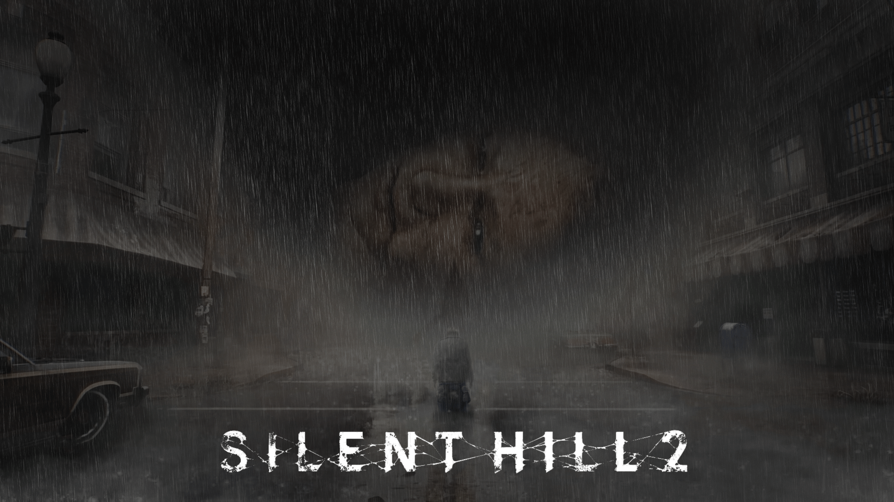
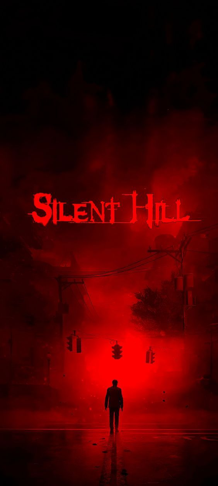

Conheça o Silent Hill 2!

Gênero: Terror psicologico
Plataformas: PC, PS4/5, Xbox One/Series X|S
Como funciona:

Silent Hill 2 é amplamente considerado um dos maiores clássicos do gênero terror psicológico nos videogames. Desenvolvido pela Team Silent da Konami e lançado originalmente em 2001, o jogo se destaca por sua narrativa profunda, atmosfera opressiva e jogabilidade que favorece a tensão e o desconforto em vez da ação direta.
A história gira em torno de James Sunderland, um homem que viaja até a misteriosa cidade de Silent Hill após receber uma carta de sua esposa Mary, que faleceu há três anos. A carta diz que ela o espera em seu “lugar especial”, o que leva James a questionar sua sanidade e a mergulhar em uma jornada emocional e perturbadora. Ao longo do jogo, ele encontra personagens igualmente atormentados, como Angela, uma jovem marcada por traumas familiares; Eddie, um homem instável e violento; Laura, uma menina que conhecia Mary; e Maria, uma mulher que se parece muito com sua falecida esposa, mas com uma personalidade sedutora e misteriosa.
A cidade de Silent Hill é envolta por uma névoa densa e uma atmosfera de abandono. Os ambientes são escuros, claustrofóbicos e cheios de simbolismo. O jogo não explica tudo diretamente — ele convida o jogador a interpretar os eventos, os monstros e os diálogos, que muitas vezes representam os medos, culpas e desejos reprimidos dos personagens. Um dos inimigos mais icônicos é o Pyramid Head, uma criatura silenciosa e brutal que persegue James e simboliza sua culpa e punição.
A jogabilidade de Silent Hill 2 é focada na exploração, resolução de quebra-cabeças e sobrevivência. O jogador deve vasculhar ambientes em busca de itens, pistas e armas, enquanto enfrenta monstros grotescos e tenta entender o que está acontecendo. A lanterna e o rádio são ferramentas essenciais: a lanterna ilumina os ambientes escuros, enquanto o rádio emite estática quando há inimigos por perto. O combate é propositalmente limitado — James não é um guerreiro, e isso reforça a sensação de vulnerabilidade. O jogador pode usar armas brancas e de fogo, mas a munição é escassa, e os confrontos são tensos e muitas vezes evitáveis.
Os quebra-cabeças variam em dificuldade e exigem lógica, observação e atenção aos detalhes. O jogo permite ajustar separadamente os níveis de dificuldade de combate e de puzzles, o que foi uma inovação na época. Além disso, Silent Hill 2 possui múltiplos finais, que dependem das ações do jogador ao longo da campanha, como o tempo gasto com Maria, o estado de saúde de James e decisões específicas em momentos-chave.
A trilha sonora, composta por Akira Yamaoka, é outro ponto alto. Ela mistura melodias melancólicas com sons industriais e efeitos perturbadores, criando uma ambientação sonora que intensifica o horror psicológico. O design de som é cuidadosamente construído para causar desconforto e tensão, mesmo nos momentos de silêncio.
Silent Hill 2 é mais do que um jogo de terror — é uma experiência emocional e introspectiva. Ele trata de temas como luto, culpa, abuso, suicídio e redenção, e faz isso com uma sensibilidade rara nos videogames. Mesmo décadas após seu lançamento, continua sendo estudado, discutido e reverenciado como uma obra-prima do terror interativo.
Sbre Silent Hill 2
Silent Hill 2 é uma jornada introspectiva onde o terror não reside apenas nos monstros, mas nas verdades que o protagonista se recusa a enfrentar.
- A jogabilidade de Silent Hill 2 privilegia a tensão psicológica, utilizando ambientes opressivos e recursos limitados para intensificar a sensação de vulnerabilidade.
- Cada criatura encontrada em Silent Hill 2 é uma manifestação simbólica dos traumas e culpas do protagonista, tornando o combate uma metáfora emocional.
- O design sonoro e visual de Silent Hill 2 não busca apenas assustar, mas envolver o jogador em uma atmosfera de melancolia e desconforto constante.
Conheça outros jogos!